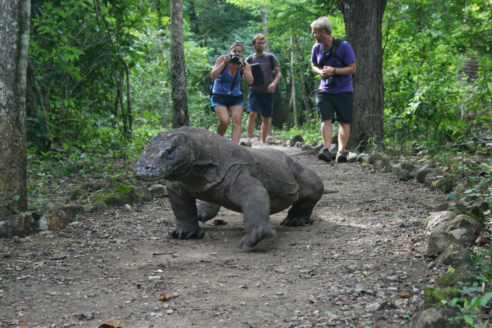
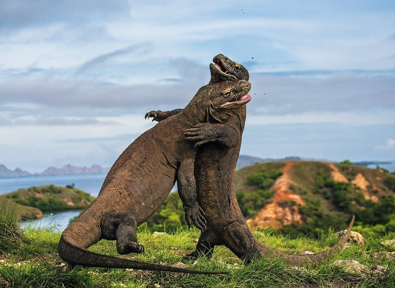
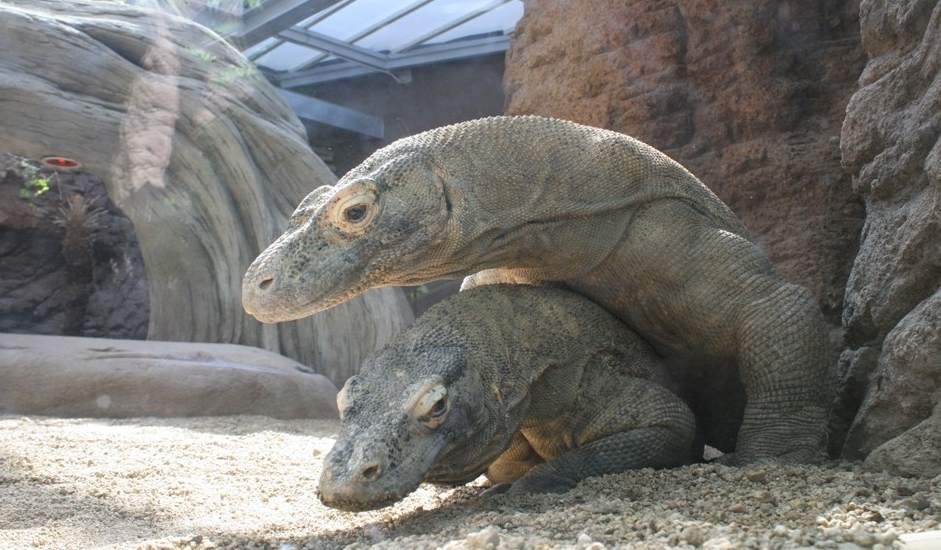

Gatunek gada z rodziny waranów nazywany smokiem z Komodo. To największa współcześnie żyjąca jaszczurka. Odkryta w 1910 roku. Aby ją chronić, założono w 1980 r. Park Narodowy Komodo. Aktywny w dzień, noc spędza w wygrzebanych przez siebie norach. Poluje z zasadzki, do upatrzonej zdobyczy zakrada się od tyłu. Atakując mniejszą zdobycz, może rzucić się wprost do jej szyi.
Głowa duża i szeroka, szyja gruba i masywna, baryłkowaty tułów, ogon gruby u nasady, a w dalszej części bocznie spłaszczony, równy połowie długości ciała. Szeroka szczęka uzbrojona w 60 zębów. Ciało pokryte ziarnistymi łuskami. Grzbiet ciemnobrązowy, pokryty czarnymi plamkami. Badania wykazały, że w ślinie warana żyje ok. 50 różnych szczepów bakterii, rozwijających się dzięki resztkom mięsa pozostającym między zębami warana. Sugerowano, że bakterie te przy ukąszeniu dostają się do krwi zaatakowanego zwierzęcia, powodując infekcję prowadzącą do śmierci ofiary.  Z drugiej strony, Brian G. Fry i in. (2006) odkryli, że inny przedstawiciel rodziny waranów, waran kolorowy, wytwarza prawdziwy jad. Twierdzą przy tym, że ukąszenia dwóch innych przedstawicieli tej rodziny – Varanus scalaris i warana z Komodo – wywołują u ukąszonej ofiary objawy wskazujące bardziej na działanie jadu, niż na infekcję bakteryjną[3]. Późniejsze badanie Fry'a i współpracowników potwierdziło fakt wytwarzania przez warany z Komodo prawdziwego jadu. Autorzy kwestionują też wpływ występujących w ślinie waranów bakterii na śmierć ich ofiar[4]. Na krótkim odcinku waran z Komodo może biec z szybkością do 20 km/h. Potrafi też pływać w pogoni za ofiarą.Waran z komodo objawił się naszym oczom dopiero w 1910 roku. A ze względu na groźną budowę, rozmiar, ostre pazury i szybkość nazywany bywa Smokiem z Komodo.
 Okazuje się jednak, że to nie Indonezja, ale Australia była miejscem narodzin tego żyjącego współcześnie „smoka”. Według badań australijskich naukowców Waran z Komodo „narodził się” około 3-4 miliony lat temu we wschodniej części Australii. Następnie rozprzestrzeniał się na zachód, docierając do wysp indonezyjskich około 900 000 lat temu. Wiemy o tym dzięki analizie skamieniałych kości jaszczurek znalezionych na Piątym Kontynencie, które to wykazywały zadziwiające podobieństwo do kości współczesnych waranów.  Te wyrośnięte jaszczurki zamieszkują kilka wysp Archipelagu Sundajskiego należących do Indonezji (m. in. Komodo, Flores, Rinca, Gili Motang, Nusa Kode). Chociaż o waranie wiemy już sporo, to do niedawna niewiele było wiadomo o jej pochodzeniu. Według jednej z teorii wielka jaszczurka miała wyewoluować z mniejszych przodków, w czym była pomocna geograficzna izolacja wysp.